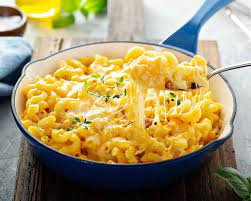

Macarrones con Queso

Los macarrones con queso, conocidos cariñosamente como "mac and cheese," son un plato reconfortante y sabroso que combina la simplicidad de la pasta con la cremosidad del queso.
Ingredientes
- Macarrones: Los macarrones son la pasta tradicionalmente utilizada en esta receta, pero también puedes experimentar con otros tipos de pasta si lo deseas.
- Queso: El queso es el corazón de esta receta. Se suele utilizar una combinación de quesos, con cheddar como el más común, debido a su sabor y capacidad de fundirse bien. También puedes agregar otros quesos como mozzarella, colby, o cualquier queso que te guste.
- Mantequilla: Se utiliza para hacer la base de la salsa de queso, el roux, que ayuda a espesar la salsa.
- Harina: La harina se combina con la mantequilla para formar un roux y espesar la salsa de queso.
- Leche: La leche es el líquido que se usa para crear la base de la salsa de queso.
- Sal y pimienta: Para sazonar la salsa de queso a tu gusto.
Pasos
- Cocinar los macarrones: Cocina los macarrones según las instrucciones del paquete en agua con sal hasta que estén al dente. Luego, escúrrelos y resérvalos.
- Preparar la salsa de queso: En una cacerola grande, derrite un poco de mantequilla a fuego medio. Luego, agrega harina y revuelve para hacer un roux. Cocina la mezcla de mantequilla y harina durante unos minutos hasta que tenga un color dorado claro.
- Agregar la leche: Gradualmente, vierte la leche en la cacerola, batiendo constantemente para evitar grumos. Cocina la mezcla a fuego medio-bajo, revolviendo hasta que espese y adquiera una consistencia suave. Esto puede llevar unos minutos.
- Añadir el queso: Agrega el queso rallado a la mezcla de leche y revuelve hasta que el queso se derrita y la salsa tenga una consistencia espesa y cremosa. Si lo deseas, puedes agregar mostaza de Dijon, pimiento de cayena o paprika para darle sabor adicional.
- Mezclar los macarrones con la salsa: Incorpora los macarrones cocidos en la salsa de queso y revuelve para asegurarte de que todos los macarrones estén bien cubiertos con la salsa.
- Servir: Sirve los macarrones con queso calientes en platos individuales. Puedes espolvorear un poco de queso adicional por encima si lo deseas.